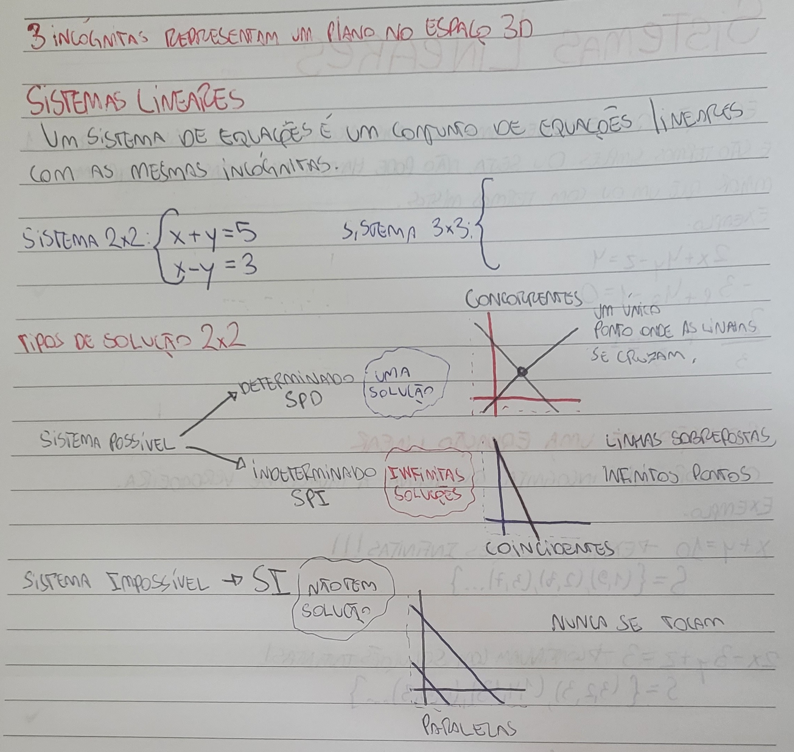

|  |
Na prática, resolver um sistema linear implica determinar os valores das variáveis que atendem a todas as equações simultaneamente. Para isso, há diversos métodos de resolução, que diferem em complexidade e aplicabilidade conforme a quantidade de equações e incógnitas. O objetivo final é sempre encontrar a solução única (se houver), verificar se há infinitas soluções ou concluir que o sistema não tem solução. Um dos métodos mais utilizados é o da substituição, em que se isola uma variável em uma das equações e se substitui esse valor na(s) outra(s). Isso simplifica o sistema até chegar a uma equação mais básica, tornando mais fácil encontrar os valores das variáveis. Esse método é muito eficaz em sistemas pequenos, particularmente em sistemas de duas equações com duas incógnitas. |